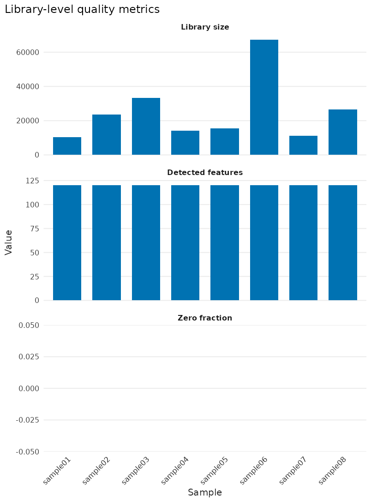
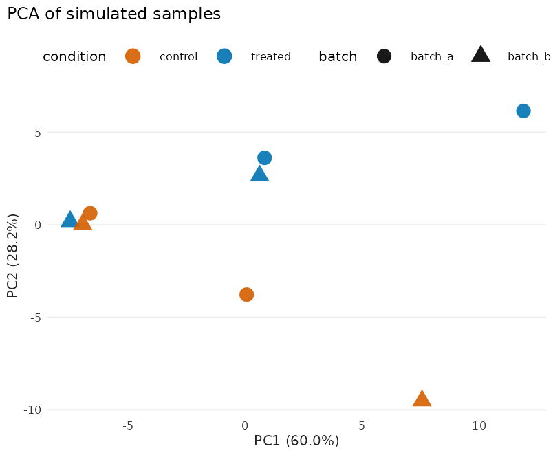

本文会完成什么
这篇教程用一份小型合成数据，在几分钟内完成一条可执行的核心流程：
- 从 feature × sample 表达矩阵构建
MultiAssayExperiment（MAE）； - 检查 experiment、assay 和样本元数据是否按标识符对齐；
- 在不修改原对象的前提下增加一个用于探索性分析的 assay；
- 计算文库 QC、运行 PCA，并用标准 ggplot2 语法定制结果；
- 从样本元数据构建设计矩阵，为后续统计后端准备显式模型。
合成数据只用于教学和复现 bug，没有生物学意义。真实 counts 的过滤、VST、配对 DE、MA/Volcano 和热图请继续阅读 airway 配对差异分析教程。
先理解三个显式选择
大多数 bulkMAE 分析函数都会明确接收三个信息：
-
x：保存数据与元数据的 MAE； -
experiment：本次分析使用哪个SummarizedExperiment； -
assay：该 experiment 中使用哪一个数值矩阵。
MAE 的 experiments() 保存一个或多个实验或数据模态，每个
SummarizedExperiment 内的 assays() 才保存
counts、log-CPM 等数值层；colData()
保存主样本元数据，sampleMap() 记录 experiment
列与主样本的对应关系。bulkMAE 在调用分析方法前解析这些关系，让后端看到
feature × sample 矩阵和顺序一致的样本表。
包不会维护隐藏的“分析状态”：分析函数返回后端原生结果；mae_add_*()
和 mae_subset_*() 等 helper
返回修改后的副本，原对象保持不变。
从矩阵构建 MAE
先用 mae_simulate()
生成可复现的输入素材，再提取出普通矩阵和两个元数据表。后面的
mae_from_matrix()
与用户导入自己表达矩阵时使用的是同一个入口。
fixture <- mae_simulate(
n_features = 120L,
n_samples = 8L,
seed = 20260825L
)
#> Warning: replacing previous import 'S4Arrays::makeNindexFromArrayViewport' by
#> 'DelayedArray::makeNindexFromArrayViewport' when loading 'SummarizedExperiment'
counts <- mae_pull_assay(fixture, "rna", "counts")
sample_data <- mae_samples(fixture, "rna")
feature_data <- mae_feature_data(fixture, "rna")
sample_data$condition <- factor(
sample_data$condition,
levels = c("control", "treated")
)
sample_data$batch <- factor(
sample_data$batch,
levels = c("batch_a", "batch_b")
)
knitr::kable(
sample_data[, c("condition", "batch"), drop = FALSE],
caption = "合成数据的样本设计"
)| condition | batch | |
|---|---|---|
| sample01 | control | batch_a |
| sample02 | treated | batch_a |
| sample03 | control | batch_b |
| sample04 | treated | batch_b |
| sample05 | control | batch_a |
| sample06 | treated | batch_a |
| sample07 | control | batch_b |
| sample08 | treated | batch_b |
这里显式固定 reference level，因此后面的
conditiontreated 表示 treated 相对 control；用户数据
不能依赖字符排序或上游软件留下的偶然 factor level。
表达矩阵必须有唯一、非缺失的行列名；sample_data 的 row
name 必须与矩阵列对应， feature_data 的 row name
必须与矩阵行对应。如果上游表格顺序不同，应先按 ID 显式重排：
sample_data <- sample_data[colnames(counts), , drop = FALSE]
feature_data <- feature_data[rownames(counts), , drop = FALSE]
stopifnot(
identical(colnames(counts), rownames(sample_data)),
identical(rownames(counts), rownames(feature_data))
)
mae <- mae_from_matrix(
expression = counts,
samples = sample_data,
row_data = feature_data,
experiment = "rna",
assay = "counts"
)
mae_validate(mae, "rna")
mae_experiments(mae)
#> [1] "rna"
mae_assays(mae, "rna")
#> [1] "counts"
dim(mae_pull_assay(mae, "rna", "counts"))
#> [1] 120 8这里创建的是 120 features × 8 samples 的 counts-only MAE。
mae_validate()检查公共结构契约；访问器返回已经按 assay
样本顺序对齐的对象：
aligned_counts <- mae_pull_assay(mae, "rna", "counts")
aligned_samples <- mae_samples(mae, "rna")
aligned_features <- mae_feature_data(mae, "rna")
stopifnot(
identical(colnames(aligned_counts), rownames(aligned_samples)),
identical(rownames(aligned_counts), rownames(aligned_features))
)
list(
experiments = mae_experiments(mae),
assays = mae_assays(mae, "rna"),
sample_columns = names(aligned_samples),
feature_columns = names(aligned_features)
)
#> $experiments
#> [1] "rna"
#>
#> $assays
#> [1] "counts"
#>
#> $sample_columns
#> [1] "condition" "batch" "subject_id" "timepoint"
#> [5] "replicate" "survival_time" "event" "outcome"
#> [9] "risk_score" "age"
#>
#> $feature_columns
#> [1] "gene_length" "gene_symbol" "entrez_id" "gene_id"无状态地增加一个 assay
原始 counts 适合计算文库规模和拟合 count model；样本相关性和 PCA 应使用经过合适处理的连续尺度。 为了让本教程的分析链不调用可选统计后端，这里计算一个简单的 library-size-scaled log-CPM， 仅用于 QC 和可视化。真实分析的探索性图形应采用与方法相符的变换；DESeq2/edgeR 从 counts 建模，limma-voom 则使用由 counts 估计的 voom 表达值和精度权重拟合。
library_size <- colSums(counts)
stopifnot(all(library_size > 0))
log_cpm <- log2(
sweep(counts, 2L, library_size, "/") * 1e6 + 0.5
)
# 故意打乱输入，展示 mae_add_assay() 会按 feature/sample ID 对齐。
log_cpm_unordered <- log_cpm[
rev(rownames(log_cpm)),
rev(colnames(log_cpm)),
drop = FALSE
]
mae_qc <- mae_add_assay(
mae,
"rna",
value = log_cpm_unordered,
name = "log_cpm"
)
stopifnot(identical(
mae_pull_assay(mae_qc, "rna", "log_cpm"),
log_cpm
))
knitr::kable(
data.frame(
object = c("mae", "mae_qc"),
assays = c(
paste(mae_assays(mae, "rna"), collapse = ", "),
paste(mae_assays(mae_qc, "rna"), collapse = ", ")
)
),
caption = "增加 assay 前后的两个独立对象"
)| object | assays |
|---|---|
| mae | counts |
| mae_qc | counts, log_cpm |
原对象 mae 仍然只有 counts；后续使用包含两个 assay 的
mae_qc。这种显式副本避免了函数在
后台改变输入，也让分析脚本能够清楚记录每个数据状态。
在正确尺度上检查样本
原始 counts 的文库 QC
qc_library() 返回透明的样本级汇总：文库规模、检出
feature 数和零值比例。它们适合发现需要
回查的样本，但任何一个指标都不能单独证明样本应该被删除。
library_metrics <- qc_library(mae_qc, "rna", assay = "counts")
knitr::kable(
library_metrics,
digits = 3,
caption = "原始 counts 的样本级文库指标"
)| sample | library_size | detected_features | zero_fraction |
|---|---|---|---|
| sample01 | 10309 | 120 | 0 |
| sample02 | 23682 | 120 | 0 |
| sample03 | 33334 | 120 | 0 |
| sample04 | 14250 | 120 | 0 |
| sample05 | 15502 | 120 | 0 |
| sample06 | 67181 | 120 | 0 |
| sample07 | 11099 | 120 | 0 |
| sample08 | 26448 | 120 | 0 |
library_plot <- plot_qc_library(library_metrics) +
labs(title = "Library-level quality metrics")
library_plot
图 1：合成数据中各样本的文库规模、检出 feature 数和零值比例。
连续尺度上的 PCA
reduce_pca() 返回原生 prcomp
对象，不打开图形设备。这里按 log-CPM 方差选择前 80 个
features；颜色和形状所用的元数据由样本 ID 连接，而不是按行位置猜测。
pca <- reduce_pca(
mae_qc,
"rna",
assay = "log_cpm",
top_n = 80L
)
pca_plot <- plot_embedding(
pca,
sample_data = mae_samples(mae_qc, "rna"),
colour = "condition",
shape = "batch"
) +
labs(title = "PCA of simulated samples") +
theme(legend.position = "top")
pca_plot
图 2：log-CPM 上方差最高的 80 个 features 的 PCA；颜色表示 condition，形状表示 batch。
PCA 只描述当前数据中的主要变异方向，不能代替设计矩阵、统计模型或批次诊断。真实样本的相关性、 稳健离群距离和审查原则在 airway 教程中有完整示例。
在拟合前检查设计矩阵
bulkMAE
不会把“paired”或“batch-corrected”等字符串转换成隐藏模型。公式直接针对已经对齐的
样本元数据求值；de_design()只构建设计矩阵，不调用任何 DE
后端。
design <- de_design(mae_qc, "rna", ~ batch + condition)
knitr::kable(
design,
digits = 0,
caption = "由 ~ batch + condition 生成的设计矩阵"
)| (Intercept) | batchbatch_b | conditiontreated | |
|---|---|---|---|
| sample01 | 1 | 0 | 0 |
| sample02 | 1 | 0 | 1 |
| sample03 | 1 | 1 | 0 |
| sample04 | 1 | 1 | 1 |
| sample05 | 1 | 0 | 0 |
| sample06 | 1 | 0 | 1 |
| sample07 | 1 | 1 | 0 |
| sample08 | 1 | 1 | 1 |
设计矩阵的 8 行与 assay 样本一致，列为 (Intercept), batchbatch_b,
conditiontreated。真正拟合时，应显式记录 formula、coefficient 或
contrast；de_deseq2()、de_edger()、de_limma()
和 de_dream() 继续返回各后端的原生对象。
ggplot 定制与最终尺寸
所有图形构造函数都返回普通 ggplot，因此可以继续使用
+ labs()、+ theme() 和
+ scale_*()。对象同时携带建议的最终厘米尺寸：
inherits(pca_plot, "ggplot")
#> [1] TRUE
attr(pca_plot, "bulkmae_dimensions")
#> $width
#> [1] 8.5
#>
#> $height
#> [1] 7
#>
#> $units
#> [1] "cm"theme_bulkmae() 默认使用 6 pt
文字，但主题不能控制图形设备宽高。本文通过 chunk 的
fig.width/fig.height
控制嵌入预览；在自己的项目中，用 plot_save()
按建议尺寸写出最终文件：
custom_pca <- pca_plot +
theme_classic(base_size = 6) +
theme(legend.position = "bottom") +
scale_colour_manual(values = c(
control = "#0072B2",
treated = "#D55E00"
))
plot_save("pca.pdf", custom_pca)上面的导出示例会写文件，因此不在 vignette
构建时执行。plot_save() 默认
scale = 1；期刊指定 宽高时再显式传入
width、height 和 units。
下一步
快速入门只覆盖稳定的输入、访问、QC、设计和绘图契约。其它分析按研究问题进入对应接口：
| 目标 | 入口 |
|---|---|
| 真实 RNA-seq QC、过滤、VST 和配对 DE | airway 配对差异分析教程 |
| Salmon/kallisto/RSEM 导入 | import_tximport() |
| DE 原生后端结果与六列统一视图 |
de_*()、de_table()、de_ranks()、de_selected()
|
| ORA、GSEA、原生结果与富集绘图 | 富集分析教程 |
| LINCS 反向签名药物假设 | LINCS 连接性教程 |
| 基因集打分和调控活性 |
score_*()、activity_*()
|
| 批次、共表达、去卷积和临床模型 |
adjust_*()、coexpr_*()、deconv_*()、surv_*()
|
| 完整函数与输入边界 | 在线 reference 与 方法指南 |
统计后端仍是可选依赖，只在相应 adapter 被调用时检查。项目应记录 MAE 构建代码、ID 版本、assay 尺度、feature 选择、模型公式、contrast、随机种子以及外部资源版本。
本文使用 bulkMAE 0.4.1。完整会话信息如下：
sessionInfo()
#> R version 4.6.1 (2026-06-24)
#> Platform: x86_64-pc-linux-gnu
#> Running under: Ubuntu 24.04.5 LTS
#>
#> Matrix products: default
#> BLAS: /usr/lib/x86_64-linux-gnu/openblas-pthread/libblas.so.3
#> LAPACK: /usr/lib/x86_64-linux-gnu/openblas-pthread/libopenblasp-r0.3.26.so; LAPACK version 3.12.0
#>
#> locale:
#> [1] LC_CTYPE=C.UTF-8 LC_NUMERIC=C LC_TIME=C.UTF-8
#> [4] LC_COLLATE=C.UTF-8 LC_MONETARY=C.UTF-8 LC_MESSAGES=C.UTF-8
#> [7] LC_PAPER=C.UTF-8 LC_NAME=C LC_ADDRESS=C
#> [10] LC_TELEPHONE=C LC_MEASUREMENT=C.UTF-8 LC_IDENTIFICATION=C
#>
#> time zone: UTC
#> tzcode source: system (glibc)
#>
#> attached base packages:
#> [1] stats graphics grDevices utils datasets methods base
#>
#> other attached packages:
#> [1] ggplot2_4.0.3 bulkMAE_0.4.1
#>
#> loaded via a namespace (and not attached):
#> [1] sass_0.4.10 generics_0.1.4
#> [3] SparseArray_1.12.2 lattice_0.22-9
#> [5] digest_0.6.39 magrittr_2.0.5
#> [7] evaluate_1.0.5 grid_4.6.1
#> [9] RColorBrewer_1.1-3 fastmap_1.2.0
#> [11] jsonlite_2.0.0 Matrix_1.7-5
#> [13] scales_1.4.0 textshaping_1.0.5
#> [15] jquerylib_0.1.4 abind_1.4-8
#> [17] cli_3.6.6 rlang_1.3.0
#> [19] XVector_0.52.0 Biobase_2.72.0
#> [21] withr_3.0.3 cachem_1.1.0
#> [23] DelayedArray_0.38.2 yaml_2.3.12
#> [25] BiocBaseUtils_1.14.2 otel_0.2.0
#> [27] S4Arrays_1.12.0 tools_4.6.1
#> [29] dplyr_1.2.1 SummarizedExperiment_1.42.0
#> [31] MultiAssayExperiment_1.38.0 BiocGenerics_0.58.1
#> [33] vctrs_0.7.3 R6_2.6.1
#> [35] matrixStats_1.5.0 stats4_4.6.1
#> [37] lifecycle_1.0.5 Seqinfo_1.2.0
#> [39] S4Vectors_0.50.2 fs_2.1.0
#> [41] htmlwidgets_1.6.4 IRanges_2.46.0
#> [43] ragg_1.5.2 pkgconfig_2.0.3
#> [45] desc_1.4.3 pkgdown_2.2.1
#> [47] pillar_1.11.1 bslib_0.12.0
#> [49] gtable_0.3.6 glue_1.8.1
#> [51] systemfonts_1.3.2 xfun_0.60
#> [53] tibble_3.3.1 GenomicRanges_1.64.0
#> [55] tidyselect_1.2.1 MatrixGenerics_1.24.0
#> [57] knitr_1.52 farver_2.1.2
#> [59] htmltools_0.5.9 labeling_0.4.3
#> [61] rmarkdown_2.32 compiler_4.6.1
#> [63] S7_0.2.2